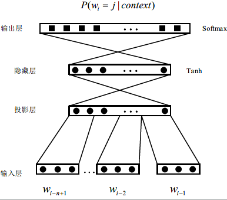
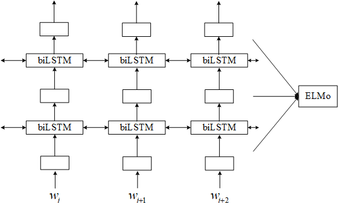
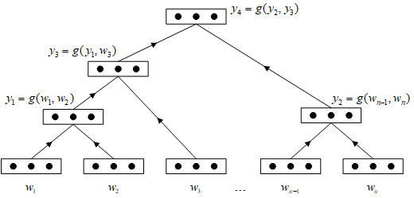
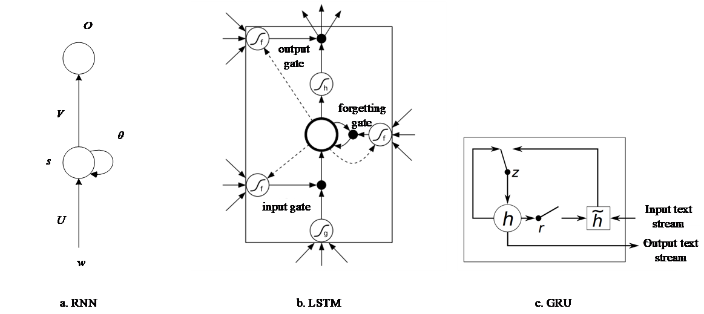
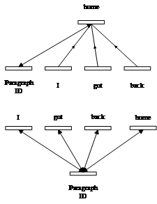
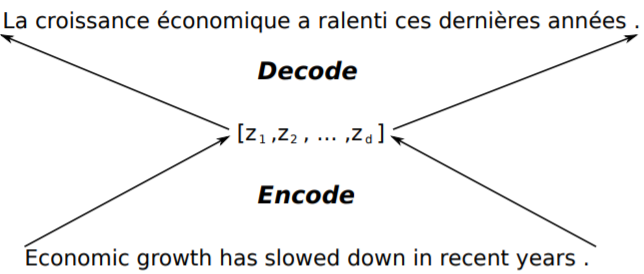
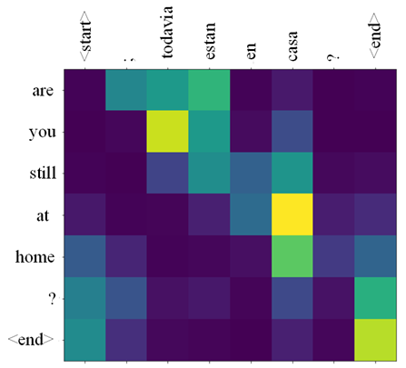
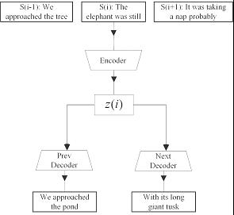

传统的离散表示获取过程直接简单，在文本粒度不长的时候能够体现优势。但是随着文本粒度的增长，离散表示会出现多个问题：（1）向量表示的维度过长，导致模型愈发复杂，计算复杂度无法承受，同时容易出现过拟合问题；（2）高维空间下存在大量缺失值，会发生严重的数据稀疏问题，导致特征的表达能力较差。
长文本表示学习之所以备受关注，原因在于其能够提炼出语言中语义的量化表示，能够衡量捕捉文本间的语义信息，作为自然语言处理流程中所必须的一步，以此在自动问答、信息检索、机器翻译、语音识别等高层自然语言处理任务（表1）与底层文字符号之间搭建桥梁。
例如，机器翻译系统中主要依靠对大量的平行语料进行统计分析，构建统计翻译模型（词汇、比对或是语言模式），进而使用此模型进行翻译。Conneau等人[^1]基于文本表示学习，将映射对齐的文本向量表示空间引入机器翻译中，有效改善了机器翻译的准确性。由于目标语言句子中的词只与源语言中的部分词有关，Thang等人[^2]将注意力机制引入机器翻译系统中，能够不断改变不同目标词所依赖不同位置词语的权值，通过权值约束能够更好地表示源语言文本语义。情感分析方面，Maas等人[^3]提出了情感编码词嵌入方法，可以捕捉语义和情感信息的词嵌入。情感分类是一个领域依赖的任务。不同的应用领域有着完全不同的情感表达，因此在一个领域训练得到的模型在另一个领域往往得不到很好的效果，Wu[^4]等人尝试基于主动学习策略选取少量有信息量的目标领域的有标注样本，从目标领域大量的无标注样本中挖掘词语间的领域特定情感关系，并通过结合以上两种信息将情感词典中的通用情感信息迁移到目标领域。
长文本表示学习模型通常在语义信息表达上有最为突出的效果，因此常用于文本分类、文本生成的各个子领域，并在诸多领域都取得顶尖的结果，如阅读理解、对话系统等。作为核心技术，文本表示学习也催生了一系列商业产品，例如微软的小冰（多轮对话）、Google的Talk to books（搜索引擎）以及IBM的Waston（认知计算）。
随着对文本表示学习研究的深入，大量相关的成果不断涌现，其中计算语言学会（Association of Computational Linguistics，ACL）已经连续两年组织关于自然语言处理的表示学习专题讨论会。国内从2016年开始的全国社会媒体处理大会相继开展了表示学习的专题论坛，对相关技术的进展进行跟踪与讨论。同时已有一些学者对相关研究进行了综述工作。在已有综述文献中，Turney等人[^5]从语义向量空间的角度对基于统计模型的表示学习方法进行了整理，孙飞等人[^6]主要介绍了针对单词粒度的神经网络表示方法，刘康等人[^7]则是对基于文本表示学习的自动问答技术进行了探讨。
上述综述文献都主要针对词粒度的文本表示，然而词粒度的短文本表示与句子或段落粒度的长文本表示之间仍然有较大的鸿沟，这主要由于数据稀疏和模型大小的增长，处理单词的方法不能直接扩展到句子和段落上，因此如何从已有的短文本表示研究迁移至高效的长文本表示仍然是一个巨大挑战。本文将在已有工作的基础上，跟进最新的研究进展，全面地梳理长文本表示学习算法，并对典型的长文本表示模型进行性能比较与分析，同时对该领域未来的研究难点及趋势进行了总结和展望。
1.基于语义组合的表示模型
在任何自然语言中，都有无穷多的句子，而人脑的容量是有限的。因此，就句法的角度而言，人类的语言能力必须包括一些有限的可描述的方法来获取无限类的句子。基于以上考虑，1994年Frege提出：一段话的语义由其各组成部分的语义以及它们之间的组合方式来确定。基于词表示组合获得长文本表示就是以该思路为主。词表示的效果在基于语义组合的表示模型中起着举足轻重的作用也是最基础的一步，因此本文将首先阐述词表示的主流方法，再依据组合模型复杂度的不同，分别讨论代数运算模型、张量模型和神经网络模型三类。
1.1 词表示模型
现流行的词表示模型主要基于分布式假设，即具有相似上下文的词，应该具有相似的语义。2001年Yoshua Bengio提出了神经网络语言模型（Neural probabilistic Language Model，NPLM）[^8]，将语言建模的过程转化为神经网络模型的训练过程。其网络模型如图1所示，其中输入使用依照词序列拼接的词向量，隐藏层采用双曲函数Tanh作为激活函数。Bengio通过典型的神经网络进行上下文预测，得到的词嵌入表示在文本分类等自然语言处理任务中取得了出乎意料的效果。

为了进一步地平衡词嵌入的表达能力与算法效率，Mikolov等人[^9]提出了CBOW（Continuous Bag-of-Words Model）和Skip-gram（Continuous Skip-gram Model）两类工程化的模型，将前向神经网络模型简化为对数线性模型，直接去除了隐含层，同时采用Hierarchical Softmax作为输出层，将计算复杂度降低到了$O{\log(Unigram-perplexity(V))}$（V代表词典大小）。对于SG这类简洁且有效的模型，有大量工作对于模型的表示能力进行分析。Li [^10]以数理方式上证明了skip-gram模型等价于一个全局的点互信息（Pointwise Mutual Information，PMI）矩阵分解模型，Gittens等人[^11]基于假设得出词义可加性可以直接体现为词向量可加性的特性，这一结论提供了基于语义组合表示的理论基础。
面对文本中词之间的大跨度依赖问题，固定大小窗口输入的前馈神经网络对长程信息的捕捉能力通常捉襟见肘[^12]，因此Mikolov为了充分利用上下文信息，实现了能够序列建模的循环神经网络模型，同时采用更适合训练循环神经网络（Recurrent Neural Networks，RNN）的通过时间后向传播（Backpropagation Through Time，BPTT）的算法，将计算图展开并使用普通的反向误差传播技术更新固定的隐藏层。
Matthew[^13]等人期望获得更深层次语义特征的词表示，例如语法语义、不同上下文情况下的词汇多义性。在神经结构层次里面，较低层能够学习词性等信息，较高层则对语义有较好的编码效果。基于这种思路，Matthew构建了ELMo（Embeddings from Language Models）模型，如下图所示。

该模型主要利用双向语言模型将前后向语言模型结合起来，然后从深层的双向语言模型中的内部状态(internal state)学习词表示。
$$
\sum_{k=1}^{N}\left(\log p\left(w_{k} | w_{1}, w_{2}, \ldots, w_{k-1}, \Theta_{f o r e L S T M}\right)+\right.\log p\left(w_{k} | w_{1}, w_{2}, \ldots, w_{k-1}, \Theta_{b a c k l S T M}\right) )
$$
其中，$\Theta_{foreLSTM}$与$\Theta_{backLSTM}$分别表示前向及后向语言模型的参数，最终ELMo将多层的biLSTM的输出整合得到词表示，在自动问答、语义角色标注等任务中有可观的提升效果。
词表示模型通过建模学习目标词与上下文之间的关系来得到相应的表示。这类模型的优势在于能够借助神经网络技术自有的非线性组合特点，较少的参数就能够表示n-gram模型，因此可以建模复杂的上下文关系。通过实验表明，基于神经网络模型得到的嵌入表示能捕捉更多的语义和句法等信息，不但包含了拼写、词性等各种信息，甚至能反映词的情绪倾向。
1.2 语义组合模型
简单的代数组合模型大多基于词袋的方法完全丢失词序信息，如加法模型，
$$
p=\frac{\sum_{i} w_{i}}{N}
$$
在很多自然语言处理任务中有着不错的效果，常被用作复杂模型的比较基准[^14]。但是有充分的证据表明[^15][^16]，句子之间和句子内部的句法关系对句子和段落的语义表示至关重要。基于此，Mitchell和Lapata[^17]提出一个统一的语义组合框架，
$$
p=f(u, v, R, K)
$$
其中，$u$和$v$表示两个待组合词的向量表示，$R$代表了词的语义组合结果，$K$则表示用于语义组合的额外信息，$p$代表了词的语义组合结果。考虑到乘法模型能够表达更多的约束，即组合后的部分向量表示只与待组合词中的部分向量表示有关。Lapata提出了更成熟的加乘组合模型，
$$
p_{i}=\alpha u_{i}+\beta v_{i}+\gamma u_{i} v_{i}
$$
其中，$\alpha、\beta$与$\gamma$是权重常量，其模型使用逐点向量相加的方式从词表示得到短语及句子表示。
张量模型考虑不同语义角色的词在表示合成中的不同影响。在此之上，Milajevs等人[^18]尝试了较为复杂的加乘等张量组合表示短语以及句子的语义，例如对于形容词-名词词组，作为修饰的形容词更类似于作用于名词向量表示的映射函数。因此，将不同词性的词武断地确定为等维度的向量过于简化。通常在张量模型中不同词性的词被表示为不同维度的张量，文本的表示方式则通过张量乘法表达，本文在下表总结了各类常见张量组合模型。
| 模型 | 句子 | 代数表达式 |
|---|---|---|
| Addition+Multiplication | $$W_{1}, W_{2}, \ldots, W_{N}$$ | $$\sum \alpha w_{i}+\beta w_{i}+\gamma w_{i} w_{i}$$ |
| Relational | Sbj Verb Obj | $$\overline{V e r b} \odot(\overrightarrow{S b j} \otimes \overrightarrow{O b j})$$ |
| Copy object | Sbj Verb Obj | $$\overrightarrow{S b j} \odot(\overline{V e r b} \times \overrightarrow{O b j})$$ |
| Frob outer | Sbj Verb Obj | $$(\overrightarrow{S b j} \odot(\overline{V e r b} \times \overrightarrow{O b j})) \otimes(\overrightarrow{O b j} \odot(\overline{V e r b} \times \overrightarrow{S b j}))$$ |
代数组合模型与张量组合模型扩展性有限，一般用于短语或者简单句，为了更好地组合词向量表示，近年的很多工作都借助于神经网络的多层非线性组合的优势进行研究，如递归神经网络[^19]，卷积神经网络[^20][^21]，以及结合递归神经网络和卷积神经网络[^22][^23]等工作。
考虑到文本中存在的词序及句法等信息对于文本的语义表示有着巨大影响，Socher[^24]立足于句法分析的角度，建立句法解析树的形式分解文本，再通过解析树组合词向量表示，输入词向量$W_{1}, W_{2}, \ldots, W_{N}$推断出其组合向量$Y$，并在情感分析任务中达到最优水平。结合传统句法分析的优势在于产生了可重复利用的中间表达，这种中间表达由于其任务无关性可以一定程度上处理未出现的词以及不同领域的知识迁移。

应用在文本表示学习中的卷积神经网络输入，一般是将文本中的词向量组织成二维矩阵，然后仿照图像处理里的结构设计，也有将所有词向量叠加成一维输入，相应的卷积结构也需要改为一维卷积。根据训练方式的不同，卷积神经网络相关的表示模型依据训练方式可以分为三类：所有的词向量都随机初始化，并且作为模型参数进行训练；预训练好的向量作为输入，且在训练过程中不再更新；两套词向量构造出的句子矩阵作为两个通道，在误差反向传播时，只更新一组词向量，保持另外一组不变。Kalchbrenner等人[^21]使用动态卷积神经网络（Dynamic Convolutional Neural Network, DCNN）对句子语义表示建模，其核心是动态池化操作，
$$
K_{l}=\max \left(k_{t o p},\left\lceil\frac{L-1}{L} s\right)\right.
$$
其中$l$表示当前卷积的层数（即第几个卷积层），$L$是网络中总共卷积层的层数，$k_{top}$为最顶层的卷积层池化对应的$k$值，是一个固定的值。利用宽卷积、动态池化等操作可以在高层提取句子中相隔较远词语间的联系，由此保留了句子中词序信息以及词语之间的相对位置，并且模型不需要任何的先验知识，例如句法依存树等。
通常来说，卷积神经网络的优势在于能够依靠较短的误差传播路径，有效捕捉到词的上下文特征，在文本分类、情感分析等任务中具有更大的优势，但是无法得到文本的内在句法信息；递归神经网络则是能够由句法解析树进行语义组合以及编码结构信息，其核心为通过一个树形结构，从词开始逐步合成各短语的语义，最后得到整句话的语义。
2. 基于任务的表示模型
基于词表示的简单组合会陷入词袋模型类似的困境，对于“are you good”与“you are
good”两个由相同词组成的句子会得到相同的文本表示，而这与实际不符。为了有效解决上述问题，基于任务的表示模型通过具体任务（文本分类、上下文预测等）得到文本表示。基于端到端（end-to-end）任务的表示模型研究依据模型任务的不同主要可以分为两类，一类是通过无监督训练，通过预测上下文得到嵌入表示，另外一类则是通过监督训练特定的任务（机器翻译、文本生成）来获得表示。根据已有的文本表示模型总结，共有三类常见的文本特征抽取器，包括循环神经网络模型、卷积神经网络模型以及编码器-解码器模型。
2.1 循环神经网络模型
模型中文本信息被视为一维的线性数据序列，因此循环神经网络天然地适用于文本特征提取，最原始的循环神经网络依靠不断从前往后收集输入信息。但是在面临较长文本时，通常会因为反向传播路径过长而遇到梯度爆炸或者消失的问题。为了解决这个问题，提出了一系列的解决方案，主要围绕如何选择性地保留过往信息的问题进行研究。为此有研究工作提出了长短时记忆(LSTM, Long Short Term
Memory)神经网络（图b）、门控循环神经网络(GRU, Gated Recurrent
Neural Networks) （图4c），改进方法的核心是主要通过构建一些带参数的门单元，让模型能够选择性地记住那些重要信息，后者GRU则是为了进一步改善长短期记忆网络的计算复杂度选择了更少的门单元进行构建。

循环神经网络的另一个重大缺陷是其对并行计算的不友好，即使研究中它能够获得较好的实验效果，也很难大规模应用于工业场景。这个问题主要源于当前时刻的隐含层状态计算依赖当前时刻的输入与前一刻的隐含层状态。为了赋予它一定的并行能力，有两种思路：一种是依旧保持隐层之间的连接，但是不再保证参与计算的隐含层信息是在同一时间步里获得的；另外一种思路就是选择性地打断连续时间步之间的依赖，如每隔若干个时间步就打断一次。改造之后的循环神经网络能够加速5到15倍，但是这样的并行能力依旧有限，无法与卷积神经网络相比。
2.2 卷积神经网络模型
卷积神经网络模型对于文本嵌入特征的提取主要依靠卷积层，通过卷积操作来抽取窗口内的特征并最终进行分类。卷积神经网络主要优点是能够大规模并行化计算以及获取层次化的特征，例如用于图像处理，底层的神经元能识别边缘、曲线，高层则偏向于获取纹理等特征。但是其最大的局限性在于它能够获取的特征只能位于卷积核大小的窗口内，这会导致在类似于文本等长序列的数据上，无法获取长程数据之间的依赖信息。为了解决这个问题，主要通过将网络结构的层数加深以保证高层的神经元能够接收更大范围的信息，或者直接大跨度地移动卷积核窗口来保证同一个卷积核能够覆盖更大的范围。
Mikolov[^25]通过对不同段落文本给定不同的标签向量表示，并将其直接叠加在原有词向量表示模型上，达到学习文档级长文本语义向量的目的，但是这类模型针对特定窗口大小的文本进行训练，因此对于大规模文本，模型的伸缩性较差。

Kim[^26]选择基于卷积神经网络构建更复杂的网络结构，通过卷积核在整个句子上滑动得到特征表示，并使用最大池化获取文本中的关键信息。但是该结构存在一个巨大的问题，就是最大池化会丢失结构信息，因此很难捕获文本中的转折等复杂模式。
2.3 编码器-解码器模型
编码器-解码器模型更类似于一个特征提取框架，通过组合不同的神经网络模型能够表现出不同的性能和特征偏好，如CNN-DCNN、CNN-LSTM。编码器-解码器起始于机器翻译任务，通过接受源语言的信息作为输入，并将输入序列中的语义句法信息自动编码为隐含的嵌入表示，然后解码器将隐含的嵌入表示解码为对应的目标语言表示。由于该框架可以解决序列分析到序列生成的问题，通用的编码器-解码器可以适用于更广泛的任务，如自动摘要、问答机器人、图像描述生成等。

传统的编码器-解码器模型中输入信息不论长或短都会被抽取编码为一个固定长度的嵌入特征表示，而固定长度的向量不能容纳无限的信息，解码器模型的重建能力因而受限，但是实际上输出的部分序列只与输入序列的某部分高度相关。因此借鉴于人类的视觉选择注意力机制，尝试让模型在输出时关注输入序列中的不同词。
基础的注意力机制在应用时主要分为三步，第一步是计算query（解码器隐含状态）和每个key（编码器隐含状态）的相似度以得到注意力的分配权重；然后第二步对这些权重进行归一化，以满足柯尔莫果洛夫公理；最后将注意力的分配权重和相应的键值value（编码器隐含状态）进行加权求和得到最终结果。
$$
\text {Attention(Query, Source)}=\sum_{i} \text {Similarity}\left(\text {Query}, K e y_{i}\right)^{*} \text {Value}_{i}
$$
通过解码器与编码器的隐含状态进行相似度比对，为文本中的每个词赋予不同的权重。以英语-西班牙语为例，将输入与输出的对齐矩阵输出如图7所示，图中色块的颜色深度越深。说明两个词的相关性越强，反之，颜色越弱则相关性越弱，可以显著地表明注意力机制的优越性。
它给予了模型区分辨别的能力，高效地分配了模型的有限注意力资源，以此来抽取更加关键的信息，使模型能够做出更准确的判断，同时不会增加模型的计算开销，其本质可以被看做是基于Key与Query的存储器寻址。

Kiros等人[^27]借鉴Skip-gram的思想，提出了句级表示的skip-thought，通过建立基于循环神经网络的编码器-解码器模型，对文本进行编码、预测重构该句子的前后语句。

然而上述模型不仅得到语义信息，还学到了与语义无关的表达方式，存在大量的冗余信息，为此Logeswaran[^28]将skip-thought中的解码过程替换为分类模型，
$$
p\left(s_{c o n d} | s, S_{c a n d}\right)=\frac{\exp \left[c\left(f(s), g\left(s_{c m d}\right)\right)\right]}{\sum_{s^{\prime} \in S_{c m d}} \exp \left[c\left(f(s), g\left(s^{\prime}\right)\right)\right]}
$$
上式表示给定句子的上下文，计算候选句是正确原上下文的概率，其中$S_{cand}$表示候选句，$s$表示当前句。采用无标签数据学习句子的表示，同时也有效避免了在整个字典中搜索给定词带来的高昂的计算代价，训练事件相较于skip-thought提升了10倍以上。
对于段落、篇章等超长文本表示，随着文本跨度越大，基于序列建模神经网络的文本表示质量会越来越差，Yizhe Zhang等人[^29]考虑在更长粒度的文本表示中采用卷积-反卷积的编码-解码模型。相比较而言，基于RNN等序列建模神经网络模型逐步生成的重构源信息，能重构生成更连贯一致的文本，而基于卷积神经网络搭建的编码-解码模型在生成源信息时直接生成了所有的输出信号，但是避免了输出的前后依赖而引起的连续错误，由于无需考虑输入远距离依赖的问题，能有效学习特征表示并应用于文本分类及文本摘要等任务。
受惠于注意力机制的性能提升，谷歌提出了完全基于自注意力机制(Self Attention)的Transformer模型构建多层双向编码器，并基于掩膜语言模型(Mask language model, MLM)和句子预测两个任务训练模型，该模型已经在多个任务上得到最优结果，但是该模型的完整训练的代价相当之高，在4到16个Cloud TPU 上训练需要4天时间。
同时Transformer的并行程度可以与CNN相媲美，具体计算效率对比见表3，其中$n$代表序列的长度，$d$代表嵌入向量表示的维度，$k$代表卷积核的大小。为了获得更强的并行性，谷歌限制Transformer中获取依赖信息最远距离为$r$，在这种情况下，计算复杂度会下降到$O(r \cdot n \cdot d)$，然最远距离也相应变成$O(n/r)$。Peters[20]经过模型训练速度的实验对比，给出Transformer和CNN训练速度比双向LSTM快3到5倍的结论，进一步证实了三类模型之间的效率差异。
| 网络层结构 | 单层计算复杂度 | 连续操作 | 最长路径 |
|---|---|---|---|
| Self-Attention | $$O\left(n^{2} \cdot d\right)$$ | $O(1)$ | $O(1)$ |
| RNN | $$O\left(n \cdot d^{2}\right)$$ | $O(n)$ | $O(n)$ |
| CNN | $$O\left(k\cdot n \cdot d^{2}\right)$$ | $O(1)$ | $O(\log_k(n))$ |
一般来说，无监督训练模型得到的表示优于监督模型。一部分原因在于监督模型得到的表示更偏向于任务领域，无监督学习模型往往能在平衡性和代表性之间取得较好的平衡。因此，大量研究集中在如何选取监督学习模型中更具泛化性的表示任务。Conneau[^30]通过自然语言推理任务来训练句子级的嵌入表示，学习句子间的语义联系。
在此之上，研究对高层任务更加通用的文本嵌入模型进一步展开，文本表示的通用性意味着期望学习的嵌入表示更具泛化性，而不再偏重于监督模型中的具体任务。Subramanian等人[^31]利用了一个一对多的多任务学习框架，通过在上下句预测、机器翻译以及语言推理等任务中不断切换任务学习到一个通用的句子嵌入。实验表明，模型能够有效建模到句法、语法等信息。2018年初，谷歌发布的通用句子编码器同样在不同的语料库和任务中进行训练，能很好地适应各类自然语言理解的任务。
对于英文中，“How are you”，“How old are you”以及“What is your age”三个句子，虽然前两个句子的词组成类似，但是其语义完全不同，后面两个组成大不相同的句子却表达相同的语义。针对这类分布式假设失效的情况，Yinfei Yang等人[^32]提出了新的语义相似假设：如果句子的回答语义分布相似，则它们在语义上是相似的，并借助斯坦福自然语言推理数据集（Stanford NaturalLanguage Inference Corpus， SNLI），通过回答分类的方式学习句子的语义相似性。
不同的文本表示模型得到的向量表示具有不同的特点，skip-thought模型由于其预测上下文句子的模型特点，更适合于文本检索类似的任务，而基于注意力的模型则适合释义检测（Paraphrase detection）任务，同时，监督表示学习模型和无监督表示学习模型的表现也存在着差异，只在对应的监督学习任务和无监督学习任务表现出性能的优势，这些在后续实验对比中都得到了验证。值得注意的是，虽然基于序列建模的LSTM等相关改进模型构建的编码器-解码器形式体现出了一定的优势，但是由于建模过程过于复杂，最多只能记住百个单位的过往信息，同时训练成本及其高昂，大量引入的注意力机制及其变种能够很好地替代以前笨重的序列建模神经网络。这种方法减少了领域相关假设、文法学习以及大量的特征工程工作的需要。
但是编码器-解码器模型无法去解释语义聚合是如何进行的，这也是该类模型极大灵活性的代价，而语义聚合的可解释性在处理边界问题上有着很大的作用。另外，由于缺乏任务相关的先验知识的引入，学习任务关于可推导的考虑上以及解码器输出的不规范性问题上不能得到很好的限制。
3.长文本表示学习研究的挑战
3.1 嵌入表示的可解释性
文本表示学习现在还只能在具体语言任务的结果中体现其优势，无法解释嵌入表示维度的具体意义。在不能进一步解析文本语言表示的情况下，现有的研究依旧属于“调参”和“改进已有模型”的范畴，有其固有的天花板，无法达到更好的效果。对此Mimno与Thompson[^33]在借助几何工具，揭示了词嵌入与上下文词语的嵌入之间的关系，即它们不是均匀地分散在向量空间中，而是占据了与上下文单词嵌入完全相反的窄圆锥体的位置。虽然有这样的一些理论，但是我们仍然缺乏对词嵌入所在位置和属性的理解，仍然需要更多理论上的工作。在可解释性方面，基于符号的文本表示具有天然的优势，即便通过降维获得更紧凑的表示仍然有一定的可解释性。因此，如何设计一个可解释的文本表示模型，仍需进一步探索。
3.2 主题混叠的文本表示
文本不是字词的无序堆叠，而是有其自身的组织和层次性。主题混叠指一个文本的主题时常由多个主题按层次构成，每个子主题保持其自身语义与结构的完整性。然而，现有的文本表示学习研究并没有考虑到多主题混叠的问题，不能进一步量化分析文本内在的语义结构和话题结构。目前已有一些初步的研究展开，例如Lin[^34]利用注意力机制，建立二维矩阵的句子表示，不同维度的向量表示句子不同部分的语义，取得了一定的效果。
3.3 未登录词及低频词问题
实际中，在语料规模一定的情况下，无法保证能够覆盖所有的词，同时Zipf定律表示语料库中文本的词频呈幂律分布，大量词汇的出现频次往往偏低，这极大地影响通过上下文关系捕捉语义的方法的有效性。因此，需要一种可以根据已有的信息推断更多的文本表示。在这方面，基于子词或者子字的表示学习吸引了学者展开深入研究，这类表示方法以英文单词的词根词缀或汉字的偏旁等具有语义的字符单元为研究对象，期望分析词或字的字符构成并组合相应字符的表示能够有效推断出词的语义表示，同时通过字符表示的组合能够辨别词语中更细微的语义差别，进一步提升文本表示的效果。但是，该表示方法的实用性与有效性仍需更多考量。
3.4 结合已有知识的文本表示
现有文本表示学习模型的能力还有一定的局限，如对于句法分析[^35]仍然不能有效应用。人们通过有限的词汇进行组合来表示复杂的人类思想，因此，就长期来看语言在不断地调整和演化，同时在短期又体现出一定的稳定性。因此，如何将人的认知机理和已有的先验知识引入到文本表示的框架中是未来一个重要的研究方向。例如关于如何结合人工标注词典和知识库（比如同义词词典、WordNet、 HowNet等）的问题，在最近的[^36][^37]的工作已经能够看到与知识库融合的趋势，于墨[^38]结合语言学知识和无监督的表示学习方法，建立自然语言的结构表示，对句级文本的语言结构进行学习。Bian等人[^39]则是将词的形态及句法信息硬编码进词的嵌入表示中，以此能够在深度表示模型学习到更多的信息。
[^1]:Alexis Conneau, Guillaume Lample, Marc’Aurelio Ranzato, Ludovic Denoyer, and Hervé Jégou. Word translation without parallel data. arXiv preprint arXiv:1710.04087, 2017.
[^2]:Luong,Thang and Pham, Hieu and Manning, Christopher D. Effective Approaches to Attention-based Neural Machine Translation. Proceedings of the 2015 Conference on Empirical Methods in Natural Language Processing. 2015：1412-1421.
[^3]:Andrew L Maas, Raymond E Daly, Peter T Pham, Dan Huang, Andrew Y Ng, and Christopher Potts. Learning word vectors for sentiment analysis. In Proceedings of the 49th Annual Meeting of the Association for Computational Linguistics: Human Language Technologie, 2011, 1：142-150.
[^4]: Wu F, Huang Y, Yan J. Active sentiment domain adaptation. Proceedings of the 55th Annual Meeting of the Association for Computational Linguistics (Volume 1: Long Papers). 2017, 1: 1701-1711.
[^5]:Peter D Turney and Patrick Pantel. From frequency to meaning: Vector space models of semantics. Journal of artificial intelligence research, 2010, 37：141-188.
[^6]:孙飞, 郭嘉丰, 兰艳艳, 徐君, 程学旗. 分布式单词表示综述. 计算机学报, 2016, 1（22）.
[^7]:刘康, 张元哲, 纪国良, 来斯惟, 赵军. 基于表示学习的知识库问答研究进展与展望. 自动化学报, 2016, 42（6）：807-818.
[^8]:Yoshua Bengio, Réjean Ducharme, Pascal Vincent, and Christian Jauvin. A neural probabilistic language model. Journal of machine learning research, 2003, 3：1137-1155.
[^9]:Tomáš Mikolov, Kai Chen, Greg Corrado, and Jeffrey Dean. Efcient estimation of word representations in vector space. arXiv preprint arXiv:1301. 3781, 2013.
[^10]:Yitan Li, Linli Xu, Fei Tian, Liang Jiang, Xiaowei Zhong, and Enhong Chen. Word embedding revisited: A new representation learning and explicit matrix factorization perspective. International Joint Conference on Artificial Intelligence, 2015：3650-3656.
[^11]:Alex Gittens, Dimitris Achlioptas, and Michael W Mahoney. Skip-gram-zipf+ uniform= vector additivity. In Proceedings of the 55th Annual Meeting of the Association for Computational Linguistics, 2017, 1：69-76.
[^12]:Tomáš Mikolov. Statistical Language Models Based on Neural Networks. PhD thesis, 2012.
[^13]:Peters M E, Neumann M, Iyyer M, et al. Deep contextualized word representations[J]. arXiv preprint arXiv:1802.05365, 2018.
[^14]:Blacoe W, Lapata M. A comparison of vector-based representations for semantic composition. Proceedings of the 2012 joint conference on empirical methods in natural language processing and computational natural language learning. Association for Computational Linguistics, 2012: 546-556.
[^15]:H. Neville, J. L. Nichol, A. Barss, K. I. Forster, M. F. Garrett. Syntactically based sentence prosessing classes: evidence form event-related brain potentials. Journal of Congitive Neuroscience, 1991, 3:151–165.
[^16]:E. Heit, J. Rubinstein.. Similarity and property effects in inductive reasoning. Journal of Experimental Psychology: Learning, Memory, and Cognition, 1994, 20:411–422.
[^17]:Jeff Mitchell and Mirella Lapata. Composition in distributional models of semantics. Cognitive science, 2010, 34（8）：1388-1429.
[^18]:Dmitrijs Milajevs, Dimitri Kartsaklis, Mehrnoosh Sadrzadeh, and Matthew Purver. Evaluating neural word representations in tensor-based compositional settings. In Proceedings of the 2014 Conference on Empirical Methods in Natural Language Processing （EMNLP）, 2014：708-719
[^19]:Richard Socher, Alex Perelygin, Jean Wu, Jason Chuang, Christopher D Manning, Andrew Ng, and Christopher Potts. Recursive deep models for semantic compositionality over a sentiment treebank. In Proceedings of the 2013 conference on empirical methods in natural language processing, 2013：1631-1642.
[^20]:Yoon Kim. Convolutional neural networks for sentence classifcation. In Proceedings of the 2014 Conference on Empirical Methods in Natural Language Processing （EMNLP）, 2014：1746-1751.
[^21]:Nal Kalchbrenner, Edward Grefenstette, and Phil Blunsom. A convolutional neural network for modelling sentences. In Proceedings of the 52nd Annual Meeting of the Association for Computational Linguistics, 2014, 1：655-665.
[^22]:Kyunghyun Cho, Bart van Merrienboer, Dzmitry Bahdanau, and Yoshua Bengio. On the properties of neural machine translation: Encoder-decoder approaches. In Proceedings of SSST-8, Eighth Workshop on Syntax, Semantics and Structure in Statistical Translation, 2014：103-111.
[^23]:Han Zhao, Zhengdong Lu, and Pascal Poupart. Self-adaptive hierarchical sentence model. In International Joint Conference on Artificial Intelligence, 2015：
[^24]:Richard Socher, Cliff C Lin, Chris Manning, and Andrew Y Ng. Parsing natural scenes and natural language with recursive neural networks. In Proceedings of the 28th international conference on machine learning （ICML-11）, 2011：129-136.
[^25]:Quoc Le and Tomas Mikolov. Distributed representations of sentences and documents. In Proceedings of the 31st International Conference on Machine Learning （ICML-14）, 2014：1188-1196.
[^26]:Yoon Kim. Convolutional Neural Networks for Sentence Classification. Proceedings of the 2014 Conference on Empirical Methods in Natural Language Processing, 2014：1746-1751.
[^27]:Ryan Kiros, Yukun Zhu, Ruslan R Salakhutdinov, Richard Zemel, Raquel Urtasun, Antonio Torralba, and Sanja Fidler. Skip-thought vectors. In C. Cortes, N. D. Lawrence, D. D. Lee, M. Sugiyama, and R. Garnett, editors, Advances in Neural Information Processing Systems 28, 2015：3294-3302.
[^28]:Lajanugen Logeswaran and Honglak Lee. An efcient framework for learning sentence representations. arXiv preprint arXiv:1803. 02893, 2018.
[^29]:Zhang Y, Shen D, Wang G, et al. Deconvolutional paragraph representation learning. Advances in Neural Information Processing Systems. 2017: 4169-4179.
[^30]:Alexis Conneau, Douwe Kiela, Holger Schwenk, Loic Barrault, and Antoine Bordes. Supervised learning of universal sentence representations from natural language inference data. arXiv preprint arXiv:1705. 02364, 2017.
[^31]:Subramanian, Sandeep & Trischler, Adam & Bengio, Y & J Pal, Christopher. Learning General Purpose Distributed Sentence Representations via Large Scale Multi-task Learning. 6th International Conference on Learning Representations,2018.
[^32]:Yinfei Yang, Steve Yuan, Daniel Cer, Sheng-yi Kong, Noah Constant, Petr Pilar, Heming Ge, Yun-Hsuan Sung, Brian Strope, and Ray Kurzweil. Learning Semantic Textual Similarity from Conversations. arXiv preprint arXiv: 1804.07754, 2018.
[^33]:David Mimno and Laure Thompson. The strange geometry of skip-gram with negative sampling. In Proceedings of the 2017 Conference on Empirical Methods in Natural Language Processing, 2017：2873-2878.
[^34]:Zhouhan Lin, Minwei Feng, Cicero Nogueira dos Santos, Mo Yu, Bing Xiang, Bowen Zhou, and Yoshua Bengio. A structured self-attentive sentence embedding. arXiv preprint arXiv:1703. 03130, 2017.
[^35]:Jacob Andreas and Dan Klein. How much do word embeddings encode about syntax? In Association for Computational Linguistics, 2014, 2：822-827.
[^36]:Ruobing Xie, Xingchi Yuan, Zhiyuan Liu, and Maosong Sun. Lexical sememe prediction via word embeddings and matrix factorization. In TwentySixth International Joint Conference on Artifcial Intelligence, 2017：4200-4206.
[^37]:Xiangkai Zeng, Cheng Yang, Cunchao Tu, Zhiyuan Liu, and Maosong Sun. Chinese liwc lexicon expansion via hierarchical classifcation of word embeddings with sememe attention. In American Association for Artificial Intelligence, 2018.
[^38]:于墨. 自然语言句子级结构表示的建模与学习. PhD thesis, 哈尔滨工业大学, 2016.
[^39]:Jiang Bian, Bin Gao, and Tie-Yan Liu. Knowledgepowered deep learning for word embedding. In Joint European Conference on Machine Learning and Knowledge Discovery in Databases, 2014：